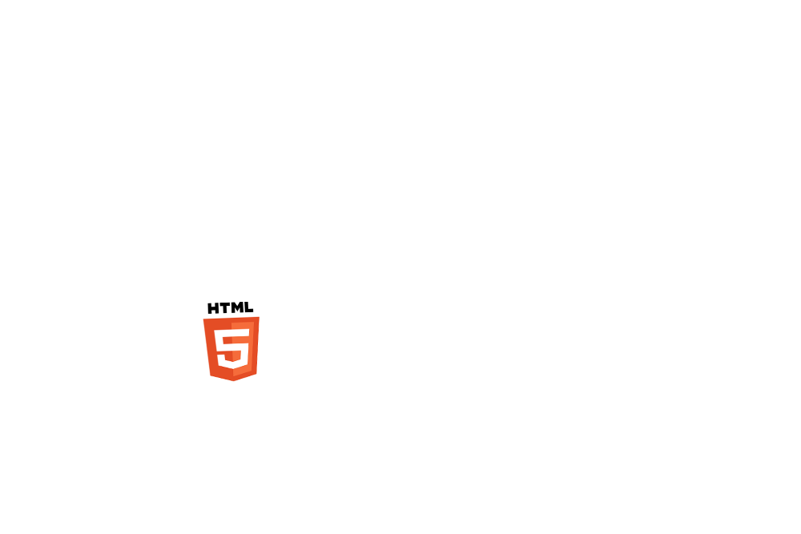
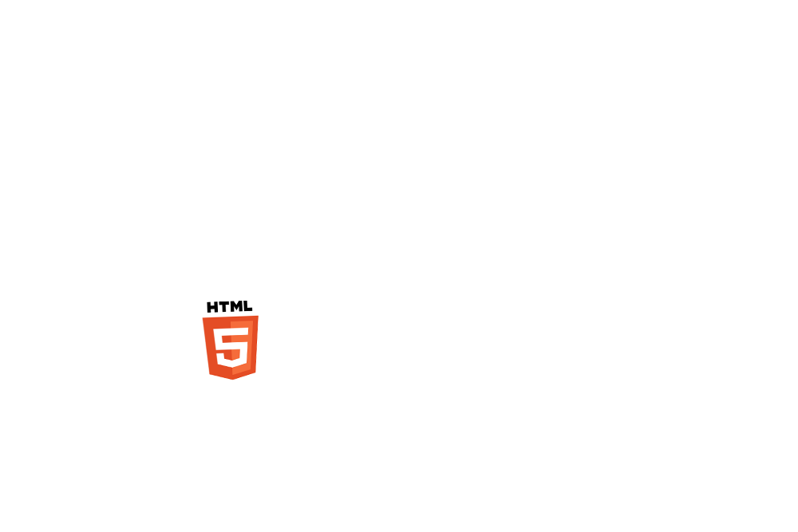
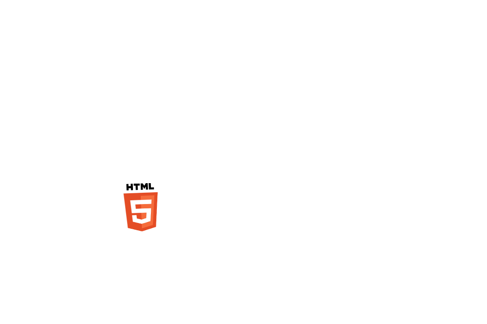

Патология
вёрстки
 

Этиология, клиника, лечение, профилактика. Николай Громов.

Возможно доброкачественное течение:
Возможно доброкачественное течение.
nicothin@nicwin10 MINGW64 /d/projects/automatoma (master)
$ npm start
module.js:471
throw err;
^
Error: Cannot find module 'gulp-sequence'
at Function.Module._resolveFilename (module.js:469:15)
[19:10:07] Starting 'style'...
[19:10:27] Finished 'style' after 20.32 s
[19:10:27] Starting 'js'...
[19:10:38] Finished 'js' after 10.54 s
.foo-bar {
text: tomato bold center uppercase 1.25em 1.5 .05em;
margin: * auto;
lost-column: 1/4;
color: rgb(200) rgba(0, 0.5);
clear: fix-legacy;
}
Text
Text
Text
But fallbacks mean I’m writing the layout twice!
This is only true if you are labouring under the assumption that websites need to look the same in all browsers. Guess what? They don’t.
Но фолбэки означают, что я пишу раскладку дважды!
Это верно лишь если вы в своей работе исходите из того, что сайты должны одинаково выглядеть во всех браузерах. И знаете что? Это ни к чему.Рейчел Эндрю, статья про CSS grid
Практика — критерий истины?

Разнообразных раскладок мало.
Делаем один раз и используем.
Text
Text
Text
Text
!importantомания !importantофобияText
© Николай Громов.